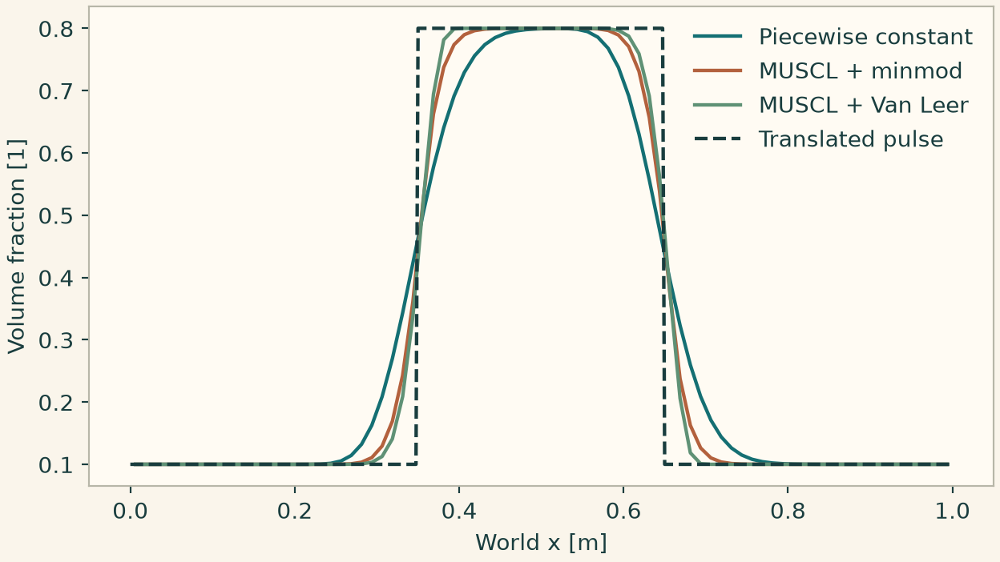
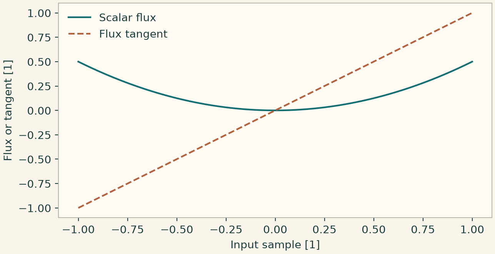

Docs › Worked numerical comparisons › Finite-volume lab
9.3 Finite-volume lab
9.3.1 Conservative reconstruction and slope limiting
Use an advected pulse with three FV choices on the same mesh. A limiter controls reconstructed traces and conservation is checked independently by integrating the cell field.
from onesim.numerics.fvm import MinmodLimiter, VanLeerLimiter
from onesim.physics.hydrodynamics import PhaseAdvection
line = Line(start=(0, 0, 0), end=(1, 0, 0))
model = PhaseAdvection(
domain=line.line, velocity=0.6, first_density=1000, second_density=1
)
def pulse(x):
return np.where((x >= 0.2) & (x < 0.5), 0.8, 0.1)
choices = {
"Piecewise constant": FiniteVolume(convection=Rusanov()),
"MUSCL + minmod": FiniteVolume(
convection=Rusanov(), reconstruction=MUSCL(), limiter=MinmodLimiter()
),
"MUSCL + Van Leer": FiniteVolume(
convection=Rusanov(), reconstruction=MUSCL(), limiter=VanLeerLimiter()
),
}
theme.use_theme()
fig, ax = plt.subplots(figsize=(6.4, 3.6), layout="constrained")
for name, spatial in choices.items():
result = line_experiment(
line,
model,
dict(volume_fraction=pulse),
spatial,
cells=80,
end=0.25,
dt=0.001,
)
fraction = result.field(model.volume_fraction)
np.testing.assert_allclose(fraction.integrate().value, 0.31, atol=1e-10)
ax.plot(fraction.space.dof_coordinates[:, 0], fraction.values, label=name)
x = np.linspace(0, 1, 401)
ax.plot(x, pulse((x - 0.15) % 1), "--", color=theme.INK, label="Translated pulse")
ax.set(xlabel="World x [m]", ylabel="Volume fraction [1]")
ax.legend(frameon=False)
plt.show()

9.3.2 Differentiate a sampled nonlinear flux
For a scalar flux with independent input samples, initialize the identity tangent and propagate the derivative through a unary law. The derivative of each flux value is on the diagonal of the sparse Jacobian.
import numpy as np
import matplotlib.pyplot as plt
import onesimulation_plot_theme as theme
from onesim.numerics.fvm import DifferentiableSamples
x = np.linspace(-1, 1, 101)
samples = DifferentiableSamples.variables(x)
flux = samples.unary(0.5 * x * x, x)
derivative = flux.jacobian.diagonal()
np.testing.assert_allclose(flux.values, 0.5 * x * x)
np.testing.assert_allclose(derivative, x)
theme.use_theme()
fig, ax = plt.subplots(figsize=(6.6, 3.4), layout="constrained")
ax.plot(x, flux.values, label="Scalar flux")
ax.plot(x, derivative, "--", label="Flux tangent")
ax.set(xlabel="Input sample [1]", ylabel="Flux or tangent [1]")
ax.legend(frameon=False)
plt.show()
